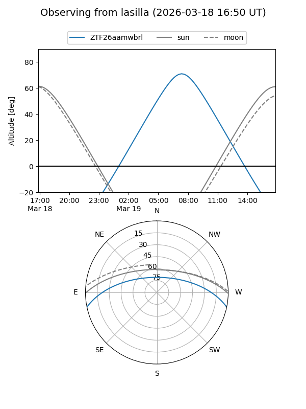
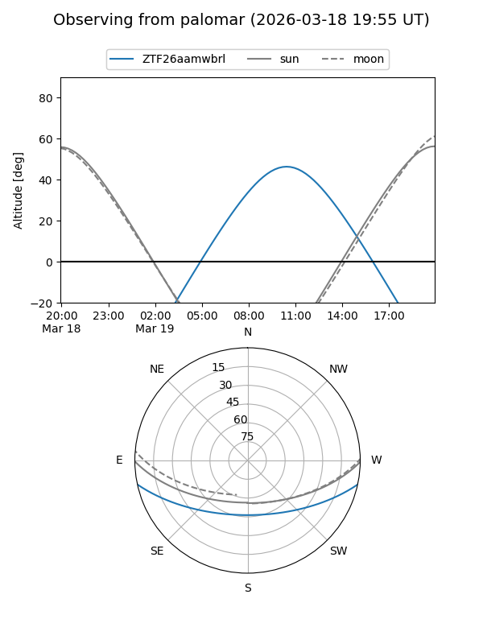

ZTF26aamwbrl
Target ZTF26aamwbrl at 2026-03-18 14:48
Aliases and brokers:
FINK: link
Lasair: link
ALeRCE: link
alt names
ZTF26aamwbrl (ztf,fink_ztf)
Coordinates:
equatorial (ra, dec) = 216.2122,-10.14796
equatorial (HMS+DMS) = 14:24:50.92,-10:08:52.67
galactic (l, b) = (337.3773,+46.38236)
Flags:
Photometry:
last ztfg=19.61
1 ztfg detections
Lightcurve
Visibility


Additional plots